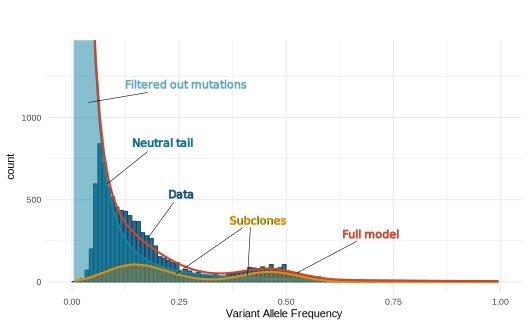

cevomod is a package that implements methods for analyzing cancer evolution from the Next Generation Sequencing data.
The modeling approach implemented in cevomod was inspired by the MOBSTER package, which models the distribution of Variant Allele Frequencies in the sample with a mixture of power-law-shaped and binomial distributions. However, MOBSTER fails to recognize the power-law component (the so-called neutral tail) in Whole Exome Sequencing data or data with insufficient sequencing coverage. cevomod implements methods that can fit the model to the data with significant loss of neutral tail variants.

Installation
You can install the development version of cevomod from GitHub with:
# install.packages("devtools")
devtools::install_github("pawelqs/cevomod")Chnages in version 2.0.0
Starting with version 2.0.0, cevomod can use either VAF or CCF (Cancer Cell Fraction) as a measure of mutation frequency. CCF is a measure of mutation frequency corrected for tumor purity and copy number alterations. CCF can be calculated prior to mutation frequency intervalization using the calc_mutation_frequencies() function and requires information on total copy number in tumor and normal tissue and sample purity (tumor cell content). See the Vignettes for more examples.
To see the previous changes in the package see the Changelog